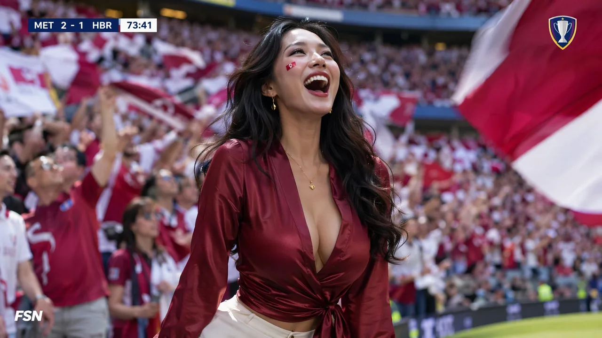
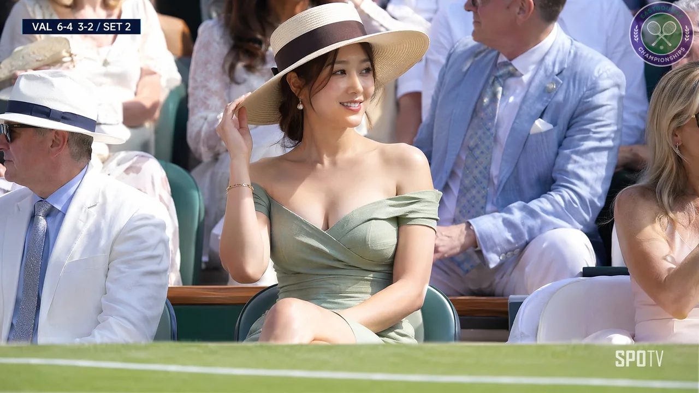

一句话
AI 人像一股“塑料感、假人味”，作者认为问题出在提示词：“漂亮、高级、大气”是人听得懂、模型画不出来的词。改成真实摄影里的物理条件，比如光从哪来、镜头多长、皮肤什么质感、穿什么面料、抓的是哪个瞬间，模型才有东西可以照着画。他把这套写法归成 8 个维度，并在楼里放了 3 套完整的中文提示词和对应出图。
8 个维度速查表（导读）
下表由本站据主帖整理，“示例词”一列是作者原文给的英文关键词。
| # | 维度 | 做什么 | 作者示例词 |
|---|---|---|---|
| 1 | 气质与影调定人设 | 用年龄、族裔、“阶层气质”和片种锚定人物，替代“漂亮”这类空标签 | 25-year-old East Asian woman, old-money relaxed elegance, editorial fashion portrait |
| 2 | 面料垂坠替代直白形容 | 写面料与剪裁，让“高级感”落在材质重量上 | raw silk, fitted merino knit, subtle collarbone shadow, tailored silhouette |
| 3 | 抓拍微表情 | 指定一个瞬间和情绪，避免摆拍的空洞眼神 | candid moment, soft knowing glance, caught mid-reaction, unaware of the camera |
| 4 | 光学镜头语言 | 焦段、光圈、颗粒、长焦压缩，模拟真实相机 | 85mm portrait lens, f/1.8 shallow depth of field, subtle film grain, natural optical compression |
| 5 | 方向性光影与皮肤 | 侧光、轮廓光，保留毛孔与自然高光 | soft diffuse directional light, gentle rim light, authentic skin texture with visible pores and natural highlights |
| 6 | 柔和散焦托主体 | 环境克制、有景深层次 | soft morning cafe ambiance, muted warm background bokeh, natural depth |
| 7 | 克制松弛定下限 | 拒绝夸张五官与浓妆，要“耐看” | classy, effortless beauty, understated luxury, natural proportions |
| 8 | 负面词防火墙 | 拦截塑料皮肤、娃娃脸、多肢、3D 渲染感 | no plastic skin, no doll face, no extra limbs, no 3D render look, no over-smoothed texture |
作者在评论区给的用法建议：先拿一两个维度单独试，和原图对比，比一次全用更容易看出每条起了什么作用；其中“抓拍”和“克制”两条对比最明显。负面词基本只用第 8 条那五个，出了什么毛病再补什么（例如手坏了再加手相关的），不一开始堆一大串。
三套提示词的骨架
楼中三套提示词（全文见附录 B）都不是“美女 + 场景”，而是一张假装成体育直播截图的画面说明，结构大致相同：
- 画面类型：大型赛事高清直播的截图（F1 看台 / 足球决赛看台），16:9。
- 机位与取景：转播机位、长焦压缩、头到膝的中景、无遮挡。
- 人物：容貌、肤质（毛孔、绒毛、哑光）、身材、服装面料与配饰。
- 瞬间：没注意到镜头的即兴表情，和身边兴奋的人群形成对比。
- 环境与光：赛道/草坪/护栏的虚化带、热浪扭曲、午后硬光、曝光充分。
- 画面图形：左上角比分/圈速条、右上角虚构徽标、虚构台标水印，并写明逐字文本。
- 负面词：真实品牌/队名/台标/公众人物、裸露、AI 感、塑料皮肤、畸形手、乱码字等。
三张配图：


作者在评论区的补充
评论区约 70 条，作者回了二十多条，大多是客套话。有信息量的几条照录如下（2026-11-03，UTC+8 15:36–15:49）：
- 回复 @FiniYang：respet，多多交流呀，再分享个我的小心得，摄影这块最容易上头的是光，先从侧光和轮廓光练起，出片变化最明显 哈哈哈 ↗
- 回复 @lian_doctor000：你这句总结的好，我自己的体会是从形容词换成物理条件，光从哪来、镜头多长、皮肤什么质感，模型才有东西可以照着画 ↗
- 回复 @syexiansheng：就是不想再看到一堆形容词堆出来的塑料脸哈哈，你可以先拿其中一两个维度试，对比一下变化，比一口气全用更容易看懂每条的作用 ↗
- 回复 @xaiwind：哈哈么么哒，这组图确实是纯提示词直出，光和景深那几条起了不小作用，摄影就是光的艺术 ↗
- 回复 @JeffRuan_：你这个发现很关键，"漂亮高级大气"是人听得懂、模型画不出来的词，换成光怎么打、镜头多长，它才有东西可以照着画呢，抓拍和克制这两条建议先单独试，对比最明显 ↗
- 回复 @wcouu4：你这个对比很有说服力哈哈，脸假皮肤塑料很多时候真不是模型的问题，是词的问题，负面词我基本就用帖子里那五个，其他的是出什么毛病再补什么，比如手有问题再加手相关的，不会一开始堆一大串 ↗
- 回复 @Curingieul：对，模型是真认这些词，因为这些词本来就对应着真实照片里的东西，"超美高级感"没有对应的画面，只能靠猜，越猜越假 ↗
- 回复 @PlatoFighter：AI摄影的关键也是光，摄影就是光的艺术 ↗
11-03 19:25（UTC+8）作者在楼里又贴了一条自己的 OKX/币安视频帖链接，与本帖主题无关，未收录。
核对与 ⚠️ 注记
- “开源”：只是公开分享提示词，没有附许可证 ⚠️。
- “Fable 5.5 打磨”：帖子说提示词是用 Fable 5.5 打磨的，没有说明 Fable 5.5 是什么模型/工具，本站没查到对应说明 ⚠️ 未核实。
- “10 年人像写真摄影老法师”：作者自报，X 简介写的是“大厂组织发展专家 × 组织心理学”，没提摄影 ⚠️ 未核实。
- “纯 Prompt 直出、零后期”：作者自报，无法核实 ⚠️。
- 配图对不上：第 1 套提示词写的是 F1 贵宾看台，配的却是网球赛场图（和主帖第 1 张图是同一张）⚠️。
- “无真实标志”没做到：网球图里的徽标和台标看起来像在模仿真实赛事与电视台 ⚠️ 推断。这类“以假乱真的直播截图”写法本身也有被误当成真实画面的风险，转发时最好标明 AI 生成。
- Flatkey 推介：主帖后半段与一楼是 Flatkey 推介，未标注是否为合作推广 ⚠️。本站 11-03 打开 flatkey.ai 首页核对：页面确有“20% OFF”、99.5% SLA、OpenAI 兼容接口、CLI、支持 Claude Code/Codex 等字样 ✅；但首页写的是“Flatkey 一侧出错的调用不收费”，比帖子里“失败请求按 0 美元计费”范围窄 ⚠️；“每天比官方直连低至少 20%”“聚合 100 多个官方模型”是平台自述，本站未比价 ⚠️。帖子写的账号 @Flatkey_AI 与官网列出的 @flatkey101 不一致 ⚠️。
- 数据：约 4.7 万浏览、397 收藏、305 赞、71 回复（2026-11-03 22:45 UTC+8 经 X 接口读取）。
对我们的启发
- 形容词换成可拍的物理条件：和 Florence、kerazcity 讲动效时“形容词→数字”是同一个思路，只是这里的“数字”是焦段、光圈、光位和面料 ⚠️ 推断。
- 逐维 A/B：一次只加一个维度、和原图对比，比一次堆满更容易知道哪条有用。这条做法可以直接用到我们自己的生图提示词测试里。
- 负面词按症状加：先放少量通用负面词，出什么毛病再补，避免负面词把画面压平。
- “直播截图”是一种很强的取景框：一句话就带来了长焦压缩、机位高度、画面图形和抓拍感。但也正因为太像真的，需要注意肖像与误导风险。
附录 A：主帖全文照录
全体起立！！开源我的8 维高级独家AI美女人像生图焚决！！（附本人10年人像写真摄影老法师用Fable 5.5 打磨的独家顶级美女人像提示词）
兄弟们有没有想过，为什么你跑出来的 AI 人像总是一股油腻的塑料感和假人味？
因为你还在用空泛的形容词，而没有用真实的摄影物理语言去约束 AI。分这套沉淀了 8 个维度的AI生图框架心法与批量流水线，能够彻底把 AI 视觉质感拉到顶级水准，
照着这套框架套词，出来的质感直接拉满：
1️⃣ 气质与影调定人设：拒绝空泛的漂亮标签，用具体阶层气质锚定气场，比如 25-year-old East Asian woman, old-money relaxed elegance, editorial fashion portrait。
2️⃣ 面料垂坠替代直白形容：高级感来自物理材质的重量，比如 raw silk, fitted merino knit, subtle collarbone shadow, tailored silhouette。
3️⃣ 抓拍微表情消除死鱼眼：指定瞬间的真实情绪，彻底告别僵硬摆拍，比如 candid moment, soft knowing glance, caught mid-reaction, unaware of the camera。
4️⃣ 电影级光学镜头语言：让画面拥有真实相机的光学景深，比如 85mm portrait lens, f/1.8 shallow depth of field, subtle film grain, natural optical compression。
5️⃣ 方向性光影雕刻皮肤呼吸感：用侧光和轮廓光保留真实毛孔肌理，比如 soft diffuse directional light, gentle rim light, authentic skin texture with visible pores and natural highlights。
6️⃣ 柔和散焦托出主体：环境必须克制且有景深层次，比如 soft morning cafe ambiance, muted warm background bokeh, natural depth。
7️⃣ 克制松弛卡死审美下限：拒绝夸张五官与过度浓妆，追求自然耐看，比如 classy, effortless beauty, understated luxury, natural proportions。
8️⃣ 工业级负面词筑起防火墙：强行拦截各类变形和 CGI 质感，卡死 no plastic skin, no doll face, no extra limbs, no 3D render look, no over-smoothed texture。
有了好提示词，怎么以极低成本批量测试并跑通工作流，才是持续起号的关键。
天天到处开不同工具会员不仅月费极高，频繁切后台更会打碎所有创作节奏。
我自己最近主力在跑的多模态底座是 Flatkey（1 ），对于天天折腾多模态创作和批量做图的人来说，确实是目前极省心也极划算的解法：
→ 官方模型，更低开销：每天价格比官方直连低至少 20%，最实用的是失败请求按 0 美元计费，多轮调试提示词完全没有心理负担。
→ 全模态一站式搞定：聚合了 100 多个官方模型，生图调 GPT Image，做视频用 Seedance，写文案切 Claude 和 GPT，一个 Key 搞定所有环节。
→ 自动化流水线丝滑：通过 Flatkey CLI 工具，可以直接让 Claude Code 或 Codex 自动批量调用模型批量产图和生成视频，把内容流水线彻底跑通。
→ 开发者零门槛平替：完全兼容 OpenAI 接口规范，现有脚本改个请求地址就能无缝迁移，带 99.5% 稳定性保障。
把生图审美参数化，再把工具链成本打下来，自媒体起号才能真正变成确定性的持续复利。
配图的几组实测大片案例与完整英文 Prompt 整理在一楼，大家现在生图最常卡在哪个环节？欢迎交流，我一定无保留分享。
这是在 Flatkey 用 GPT Image 跑出来的赛道看台美女人像，没有任何后期修图和局部重绘，纯 Prompt 直出，零塑料假面感，光影肌理完全就是顶级长焦转播机位的抓拍质感。
附录 B：楼中 4 条全文照录（含 3 套提示词）
一楼：Flatkey 工具链指引
原帖 ↗（原文中的短链已展开为网址显示）
3套独家绝版顶级美女人像提示词和 Flatkey 工具链指引见楼下👇：
→ 多模态工具链与自动化接入（@Flatkey_AI ）：
官网入口：flatkey.ai CLI 快速安装（配合 Claude Code / Codex 自动化）：npm install -g @flatkey-ai/cli
API 兼容地址：router.flatkey.ai/v1
第 1 套提示词（F1 贵宾看台）
原帖 ↗ · 所配图片为网球看台图 ⚠️
展开提示词全文
1️⃣prompt：
一段来自大型一级方程式大奖赛高清直播的截图，户外赛道，观众席主看台座无虚席，下午场次。直播镜头扫过贵宾看台区域，锁定在前排就座的一位女士——干净的中景镜头从头部到膝盖，全身清晰可见，没有任何遮挡物。 惊艳美丽的容颜——对称精致的东亚五官，高耸分明的颧骨，锋利优雅的下颉线，大而明亮的富有表现力的眼睛，饱满柔软的自然唇形，完美匀称的脸庞；始终美艳动人，非凡人。自然的肤质带有真实纹理——柔软几乎不可见的毛孔，淡淡的绒毛，半透明的哑光肤色，非修图处理。自然美丽的女性身材——自然丰满匀称的胸部，纤细有型的腰身，柔和弯曲的臀部；性感而女性化，非平板，非中性。 她身穿一件修身贴合的深V露背上衣，全黑哑光弹性面料，优雅的乳沟，裸露肩部，搭配高腰宽腿黑色长裤；犀利而极简。超大号有色方形太阳镜推到头顶，小巧的金耳钉。 捕捉到一个自然上镜的即兴瞬间——柔和温暖的眼神带着冷静从容的半微笑，头部以讨喜的三四分之三角度，微微转动仿佛在回应身旁某物；完全未察觉镜头。她身后模糊的观众皆兴奋前倾——唯有她保持从容。这种对比极为鲜明。 强烈的远摄压缩效果——画面底部显示一条模糊的赛道沥青和护栏墙带，采用大胆虚构色彩（蓝色和橙色，无真实车队标志），热浪扭曲。明亮的下午硬光阳光，锐利干净的曝光，曝光充分。 通用虚构体育直播图形：左上角信息栏“P3 — 圈速 42/58 / 大奖赛”，现代无衬线字体；右上角简单虚构赛车系列徽标；朴素虚构网络水印；16:9。干净的高清直播捕捉——清晰的4K直播色彩分级，锐利，无交错，无伪影。 --无真实品牌标志、真实F1车队名称、真实车手名称、真实赛道名称、真实电视台标志、真实公众人物、裸露、露骨、夸张解剖结构、遮挡物、过暗欠曝、交错线、扫描线、MPEG伪影、运动模糊、平凡面容、普通五官、平板胸部、中性身材、大张嘴震惊表情、不讨喜的鬼脸、AI感、塑料皮肤、无毛孔、过度修图、修图处理、CGI、畸形手部、乱码文字、低分辨率第 2 套提示词（F1 看台）
展开提示词全文
2️⃣prompt： 一级方程式赛车大奖赛直播高清广播的截图，挤满人的露天看台，下午场次。看台上的广播摄像机对准高架观众席前排就座的一位女性——干净的中景镜头从头部到膝盖，全身可见，没有任何遮挡物。 惊艳美丽的容颜——对称精致的东亚特征，高耸分明的颧骨，锐利优雅的下颌线，大而明亮的富有表现力的眼睛，丰满柔软的自然唇形，完美比例的脸庞；始终迷人，非平庸。自然的肤质带有真实纹理——柔软几乎不可见的毛孔，淡淡的绒毛，半透明的哑光肤色，非修饰过的。自然美丽的女性身材——自然丰满匀称的胸部，纤细分明的腰部，柔和弯曲的臀部；性感而女性化，非平坦，非中性。 她身穿一件修身贴合的深V露背上衣，全黑哑光弹性面料，优雅的乳沟，裸露肩部，搭配高腰宽腿黑色长裤；简洁而锋利。超大号色调方形太阳镜推到头上，小巧的金耳钉。 捕捉到一个自然上镜的即兴瞬间——柔和温暖的眼神带着冷静从容的半微笑，头部以讨喜的三四分之三角度，微微转动仿佛在回应赛况；完全未察觉摄像机。看台周围模糊的兴奋观众挥舞着虚构的队伍颜色。 强烈的远摄压缩——画面底部边缘显示柔和模糊的看台安全栏杆带以及正下方一排粉丝的头部，淡淡的热浪闪烁。远下方和她身后，赛道上的护墙以大胆的虚构颜色（蓝色和橙色，无真实队伍标志）作为遥远的失焦背景，一辆赛车呼啸而过。明亮的午后阳光，锐利干净的曝光，曝光充分。 通用虚构体育广播图形：左上角信息栏“P3 — 圈速 42/58 / 大奖赛”，现代无衬线字体；右上角简易虚构赛车系列徽标；朴素的虚构网络水印；16:9。干净的高清广播捕捉——清晰的4K广播色彩分级，锐利，无交错，无伪影。 --无真实品牌标志、真实F1队伍名称、真实车手名称、真实赛道名称、真实电视标志、真实公众人物、裸露、露骨、夸张解剖、人物坐在赛道上、赛道上的椅子、主体置于赛道上、遮挡物、过暗欠曝、交错线、扫描线、MPEG伪影、运动模糊、平凡面容、普通特征、平胸、中性身材、大张嘴震惊表情、不讨喜的鬼脸、AI外观、塑料皮肤、无毛孔、过度修饰、PS过的、CGI、畸形手、乱码文字、低分辨率第 3 套提示词（足球决赛看台）
展开提示词全文
3️⃣世界杯狂野性感prompt：
用例：逼真自然风格 资产类型：广播式体育截图，16:9宽屏 主要请求：来自全国性电视直播的大型国际足球锦标赛决赛的一张截图，场景设在爆满的体育场。镜头切到看台前排一位美丽的年轻女子，没有任何遮挡，她的躯干和身材完全可见。 主体：一位惊艳的成年东亚女性，长卷黑发、白皙无瑕肌肤、优雅妆容，以及迷人的气质。她拥有苗条而柔和曲线的身材，自然平衡的比例，不过分夸张，穿着时尚贴身的酒红色丝缎深V包身上衣，领口设计得体，高档度假风造型，自然诱人的轮廓。脸颊上贴着一个小国旗贴纸，她戴着精致的金饰。她在高潮时刻猛地仰头，爆发出欢乐的张嘴欢呼，眼睛明亮，不知自己上了镜头。得体、高雅、衣着完整。 配角：她周围是一片模糊的球迷海洋，他们穿着国家队球衣，挥舞着大旗。其中一面旗帜在画面边缘扫过，带有动态模糊效果。 场景/背景：爆满的白天体育场，明亮发光的比赛照明，曝光干净清晰。强烈的远摄压缩效果。画面底部边缘显示出一条柔和模糊的绿色草坪带和LED广告牌，长焦镜头带来的微弱热浪闪烁。 构图/取景：女性是清晰的焦点，完全可见，没有桌子或栏杆挡住她的身体。带有电视直播镜头切换的感觉。16:9。看起来完全像暂停的1080i电视画面。 光线/氛围：明亮的白天比赛，发光的体育场照明，广播级色彩分级，挥舞的旗帜上有轻微动态模糊，MPEG压缩伪影，微弱的隔行扫描线。逼真的现场体育直播外观。 文本（逐字）：MET 2 - 1 HBR | 73:41 限制：仅添加通用虚构体育广播图形，包括左上角简单简短的分数虫显示确切文本MET 2 - 1 HBR和比赛时钟73:41，右上角简单虚构的锦标赛徽章，以及角落中一个小而朴素的虚构网络水印。保持人群和旗帜充满活力但柔和失焦。无真实品牌或标志，无真实联赛或电视标志。 避免：真实品牌标志、商标、真实联赛标志、真实电视标志、FIFA标志、真实公众人物、指定名人、可识别人物、裸露、露骨内容、夸张解剖结构、桌子或栏杆挡住身体、黑暗欠曝图像、昏暗照明、AI外观、CGI、3D渲染、塑料皮肤、娃娃脸、畸形手、额外手指、乱码文本、低分辨率